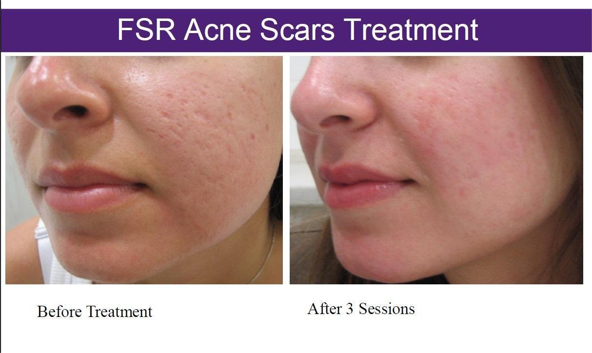

EndyMed FSR is a great option for skin tightening, Radiofrequency is delivered to the skin in two different ways simultaneously, through micro-resurfacing and dermal heating. Micro-resurfacing is used to treat issues on the superficial skin layers of the epidermis, smoothing and brightening the complexion, whilst process will continue until the treatment reaches completion. EndyMed FSR is a safe, clinically proven treatment that can be used alone or in conjunction with other procedures to deliver a natural boost to the skin and rejuvenate from the deepest
All skin will be treated with a gentle Topical Anaesthetic Cream prior to the procedure to minimize any discomfort. Your practitioner will mark out a pattern on the skin to act as a guide for the EndyMed technology to aid the practitioner in precision. The treatment works by producing heat deep within the skin. This increases collagen formation while simultaneously treating the upper layers of the skin with pixelated heat spots which produces tissue regeneration.
It treats the following issues:
